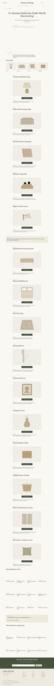
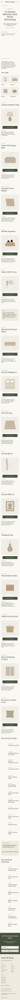

Wireframe 4 — Shopping Finds ArticleWireframe 4 — Shopping Finds Article15 finds · centered retailer buttons · 12 related finds and 8 inspiration articles · four-column desktop grids · side-by-side mobile related cards · full footer.
Design concepts only: vector product illustrations, descriptions and author details are placeholders, not verified Amazon listings or recommendations. Retailer buttons demonstrate the no-price fallback. Lifestyle photography is illustrative.
Open desktop at full size · Open mobile at full sizeDESKTOP · 1440 PX
MOBILE · 390 PX